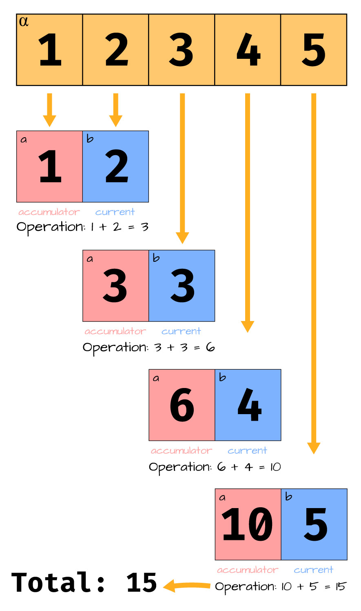

Programmation fonctionnelle
Python est un langage de programmation très flexible. Vous êtes déjà habitué à
écrire des programmes de manière impérative, c'est-à-dire en utilisant des
boucles et en définissant les fonctions à l'aide du mot clé def. Cependant, Python
supporte également la programmation fonctionnelle. Nous allons voir dans ce
cours certains aspects de la programmation fonctionnelle en Python comme les
fonctions lambda, les fonctions d'ordre supérieur et la compréhension de liste.
Les fonctions d'ordre supérieur
En programmation fonctionnelle, les fonctions sont des objets de première classe. Cela signifie que vous pouvez les passer en argument à d'autres fonctions, les retourner comme valeur de retour, ou les stocker dans des variables. Une fonction qui prend une ou plusieurs fonctions en argument ou qui retourne une fonction est appelée une fonction d'ordre supérieur.
Puisque les fonctions représentent un "code réutilisable", lorsque vous passez une fonction en argument à une autre fonction, c'est comme si vous passiez du code en argument. Ceci est très puissant et permet de personnaliser le comportement d'une fonction.
Par exemple, si vous avez une fonction qui prend une liste d'objet et une fonction pour convertir ces objets en un nombre, vous pouvez créer une fonction qui prend cette fonction de conversion en argument et retourne la somme des nombres obtenus.
def sum_objects(objects, convert):
s = 0
for obj in objects:
s += convert(obj)
return s
objects = ["1", "2", "3", "4"]
print(sum_objects(objects, int)) # 10
Cela vous évite d'avoir à écrire une fonction qui fonctionne uniquement pour les nombres. Cela permet aussi d'encapsuler la logique de conversion dans une fonction séparée.
Les fonctions d'ordre supérieur les plus courantes en Python sont map, filter
et reduce.
La fonction map
La fonction map prend une fonction et une séquence en argument et retourne une
nouvelle séquence qui est le résultat de l'application de la fonction à chaque
élément de la séquence. Par exemple, pour calculer le carré de chaque élément
d'une liste, vous pouvez utiliser la fonction map comme suit :
def square(x):
return x * x
numbers = [1, 2, 3, 4, 5]
squared_numbers = map(square, numbers)
print(list(squared_numbers)) # [1, 4, 9, 16, 25]
De façon générale, pour appliquer une fonction f à chaque élément d'une
séquence lst, vous pouvez utiliser map(f, lst). Si lst est la liste
[x1, x2, ..., xn], alors map(f, lst) retourne la liste [f(x1), f(x2), ..., f(xn)].
Pour les listes, on peut facilement définir la fonction map en Python comme suit :
Ainsi au final, map(f, lst) est équivalent à faire une simple boucle ce qui
s'exprime plus simplement avec une compréhension de liste : [f(x) for x in lst].
La fonction filter
La fonction filter prend une fonction prédicat et une séquence en argument et
retourne une nouvelle séquence qui contient uniquement les éléments de la
séquence pour lesquels la fonction prédicat retourne True. Par exemple, pour
filtrer les nombres pairs d'une liste, vous pouvez utiliser la fonction filter
comme suit :
def is_even(x):
return x % 2 == 0
numbers = [1, 2, 3, 4, 5]
even_numbers = filter(is_even, numbers)
print(list(even_numbers)) # [2, 4]
Pour les listes, on peut facilement définir la fonction filter en Python comme suit :
La fonction reduce
La fonction reduce prend une fonction à deux arguments et une séquence en
argument et retourne une valeur qui est le résultat de l'application de la
fonction binaire de manière cumulative. C'est à dire que la fonction est
d'abord appliquée aux deux premiers éléments de la séquence, puis au résultat
de cette application et au troisième élément, puis au résultat de cette
application et au quatrième élément, et ainsi de suite.
Par exemple, pour calculer la somme des éléments d'une liste, vous pouvez
utiliser la fonction reduce comme suit :
from functools import reduce
def add(x, y):
return x + y
numbers = [1, 2, 3, 4, 5]
sum_numbers = reduce(add, numbers)
print(sum_numbers) # 15
L'image ci-dessous illustre comment la fonction reduce fonctionne dans l'exemple précédent :

Source : alpharithms.com
Note
Notez que la fonction reduce doit être importée du module functools.
Attention
La fonction reduce retourne une erreur si la séquence est vide.
Pour les listes, on peut facilement définir la fonction reduce en Python comme suit :
Il s'agit donc d'une boucle qui applique la fonction f de manière répétée et
qui accumule le résultat. Bref, à chaque fois qu'on produit un résultat en
parcourant une liste de gauche à droite, on peut utiliser reduce.